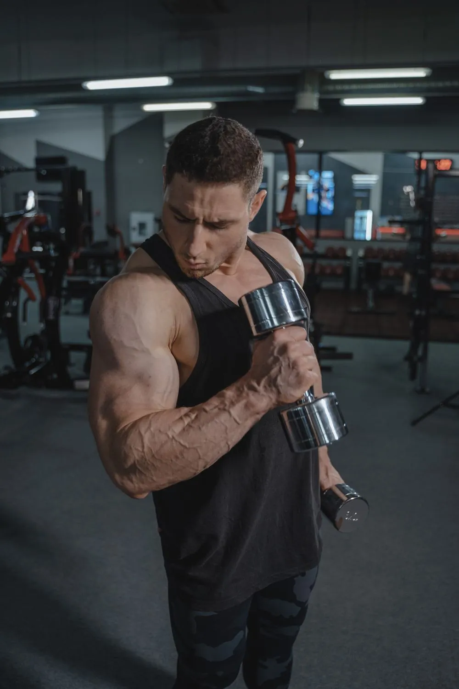
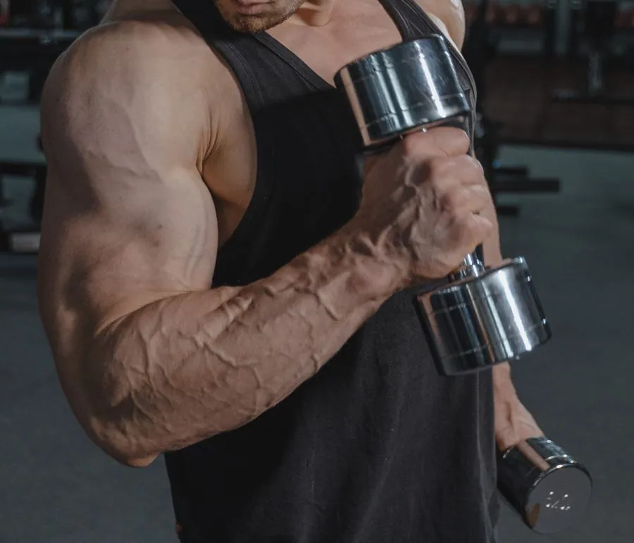

Rád szabva
Kiindulási szinted és céljaid alapján felépített edzésterv.
Nincs varázsformula. Csak egy terv, ami rólad szól, és mozgás, amitől napról napra erősebb leszel.

Nem egy sablonprogramot kapsz. A céljaidhoz, ritmusodhoz és életviteledhez igazítjuk a mozgást – egy fenntartható, követhető rendszerben.
Kiindulási szinted és céljaid alapján felépített edzésterv.
Érthető feladatok és fokozatos fejlődési útvonal.
Nem gyors trükkök, hanem valódi, vállalható szokások.
Görgess: a mintaprogramok sorban érkeznek. Válassz célt, és nézd meg, hogyan épülne fel.
Fokozatos terhelés, stabil alapok és egy rendszer, amely követhetővé teszi a fejlődésedet.
A mozgás és a tudatos tervezés összhangja, az egyéni céljaidnak megfelelően.
Könnyen követhető, fokozatos program azoknak, akik most építik újra a mozgás rutinját.

03 / THE COACH A TE CÉLOD.Ez a bemutatóoldal egy személyi edző digitális márkájának koncepciója. A bemutatkozás helyére éles projekt esetén az edző valódi története, végzettsége és fotója kerülne.
Természetesen. Ez egy bemutató tartalom; valós edzésprogram előtt az edző felméri az egyéni igényeket.
A jelenlegi űrlap kizárólag demó: nem küld adatot. Éles rendszerben biztonságos ajánlatkérőhöz vagy foglaláshoz kapcsolódna.
A gyakoriság egyénfüggő. Az oldalon szereplő mintaértékek a dizájn illusztrációi, nem személyre szabott edzéstanácsok.
Töltsd ki a demójelentkezést, és próbáld ki a felületet. Adatküldés nem történik.